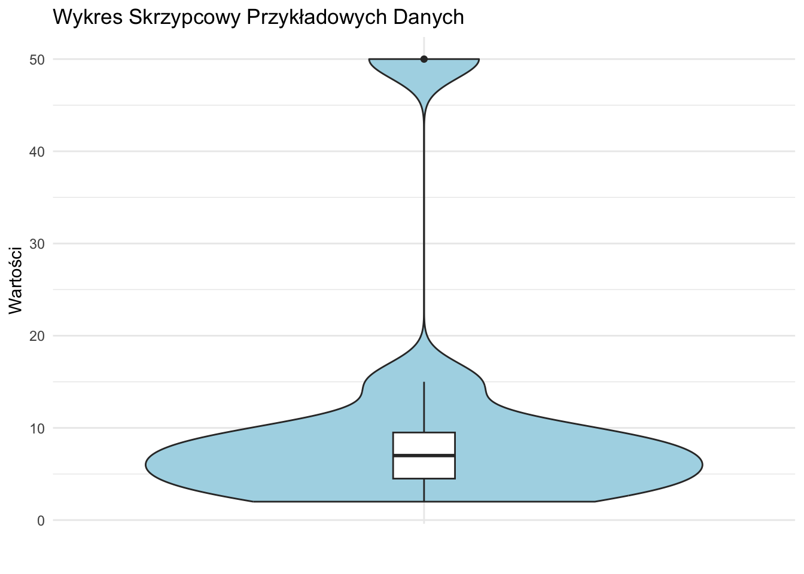

library(ggplot2)
library(dplyr)
library(tidyr)
library(scales)14 Wizualizacja Danych: z przykładami w R
W tym rozdziale poznamy podstawowe typy wizualizacji danych: wykresy słupkowe, histogramy i wykresy pudełkowe. Omówimy ich tworzenie zarówno ręcznie, jak i przy użyciu R.
14.1 Wprowadzenie do Typów Danych i Wizualizacji
Przed zagłębieniem się w konkretne techniki wizualizacji, ważne jest zrozumienie różnych typów danych i ich wpływu na wybór metody wizualizacji. Przeanalizujemy te koncepcje na praktycznych przykładach z użyciem biblioteki ggplot2 w R.
Najpierw załadujmy niezbędne biblioteki:
14.2 Wykresy Słupkowe
Wykresy słupkowe doskonale nadają się do prezentacji danych kategorycznych lub podsumowania danych ciągłych w grupach.
14.2.1 Zrozumienie Wykresów Słupkowych
Wykres słupkowy przedstawia dane za pomocą prostokątnych słupków, których wysokość jest proporcjonalna do reprezentowanych przez nie wartości. Służą do porównywania różnych kategorii lub grup.
Główne elementy wykresu słupkowego: 1. Oś X: Reprezentuje kategorie 2. Oś Y: Reprezentuje wartości (mogą to być liczebności, procenty lub dowolne wartości numeryczne) 3. Słupki: Prostokąt dla każdej kategorii, wysokość odpowiada jej wartości
14.2.1.1 Przykładowe Dane
Użyjmy prostego zestawu danych dotyczącego sprzedaży owoców:
owoce <- c("Jabłko", "Banan", "Pomarańcza", "Winogrono")
sprzedaz <- c(120, 85, 70, 100)
# Tworzenie ramki danych
df <- data.frame(owoc = owoce, sprzedaz = sprzedaz)14.2.2 Ręcznie Rysowany Wykres Słupkowy
Aby stworzyć wykres słupkowy ręcznie:
- Narysuj linię poziomą (oś X) i pionową (oś Y) prostopadłe do siebie.
- Oznacz oś X swoimi kategoriami (owocami), równomiernie rozmieszczonymi.
- Oznacz oś Y odpowiednią skalą dla Twoich wartości (sprzedaż, od 0 do 120 z przyrostami co 20).
- Dla każdej kategorii narysuj prostokąt (słupek), którego wysokość odpowiada jej wartości na skali osi Y.
- Jeśli chcesz, pokoloruj lub zacienuj każdy słupek.
- Dodaj tytuł i etykiety dla obu osi.
Tip
Przy rysowaniu ręcznym użyj papieru milimetrowego dla dokładniejszych pomiarów i prostszych linii. Wybierz skalę, która pozwoli zmieścić wszystkie dane, maksymalnie wykorzystując dostępną przestrzeń.
14.2.3 Wykres Słupkowy w Podstawowym R
# Tworzenie wykresu słupkowego
barplot(sprzedaz, names.arg = owoce,
main = "Sprzedaż Owoców",
xlab = "Rodzaje Owoców", ylab = "Sprzedaż")14.2.4 Wykres Słupkowy z ggplot2
# Tworzenie wykresu słupkowego z ggplot2
ggplot(df, aes(x = owoc, y = sprzedaz)) +
geom_bar(stat = "identity", fill = "skyblue") +
labs(title = "Sprzedaż Owoców",
x = "Rodzaje Owoców", y = "Sprzedaż") +
theme_minimal()14.2.5 Interpretacja Wykresów Słupkowych
Podczas interpretacji wykresu słupkowego zwróć uwagę na:
- Względne Wysokości: Porównaj wysokości słupków, aby zrozumieć, które kategorie mają wyższe lub niższe wartości.
- Kolejność: Czasami słupki są uporządkowane według wysokości, aby ułatwić porównania.
- Wzorce: Poszukaj wzorców lub trendów między kategoriami.
- Wartości Odstające: Zidentyfikuj słupki, które są znacznie wyższe lub niższe od pozostałych.
14.2.5.1 Przykładowa Interpretacja
Dla naszych danych o sprzedaży owoców:
- Jabłka mają najwyższą sprzedaż (120), następnie Winogrona (100).
- Pomarańcze mają najniższą sprzedaż (70).
- Istnieje znaczna różnica między najwyższą (Jabłka) a najniższą (Pomarańcze) sprzedażą.
- Banany i Winogrona mają podobne wartości sprzedaży, w średnim zakresie.
Ta informacja może być przydatna dla zarządzania zapasami lub strategii marketingowych w sklepie owocowym.
Note
Wykresy słupkowe są świetne do porównywania kategorii, ale nie pokazują rozkładu wewnątrz każdej kategorii. Do tego mogą być potrzebne inne typy wykresów, jak wykresy pudełkowe.
14.3 Histogramy
Histogramy wizualizują rozkład zmiennej ciągłej poprzez podzielenie jej na przedziały (bins) i pokazanie częstości lub gęstości punktów danych w każdym przedziale.
14.3.1 Zrozumienie Histogramów
Główne elementy histogramu: 1. Oś X: Reprezentuje wartości zmiennej, podzielone na przedziały 2. Oś Y: Reprezentuje częstość, względną częstość lub gęstość 3. Słupki: Prostokąt dla każdego przedziału, wysokość odpowiada mierze na osi Y
Istnieją trzy główne typy histogramów:
- Histogram Częstości: Oś Y pokazuje liczbę punktów danych w każdym przedziale.
- Histogram Częstości Względnej: Oś Y pokazuje proporcję punktów danych w każdym przedziale (częstość podzielona przez całkowitą liczbę punktów danych).
- Histogram Gęstości: Oś Y pokazuje gęstość, która jest częstością względną podzieloną przez szerokość przedziału. Całkowita powierzchnia wszystkich słupków sumuje się do 1.
14.3.1.1 Przykładowe Dane
Użyjmy zbioru 50 wyników egzaminów studentów (na 100 punktów):
set.seed(123) # dla powtarzalności
wyniki <- round(runif(50, min = 60, max = 100))14.3.2 Ręcznie Rysowany Histogram
Aby stworzyć histogram częstości ręcznie:
- Znajdź zakres danych.
- Wybierz liczbę przedziałów (użyjmy 7 przedziałów).
- Utwórz tabelę częstości.
- Narysuj osie X i Y.
- Oznacz oś X zakresami przedziałów, a oś Y częstością.
- Narysuj prostokąt dla każdego przedziału, z wysokością odpowiadającą jego częstości.
- Dodaj tytuł i etykiety dla obu osi.
Dla histogramu częstości względnej, podziel każdą częstość przez całkowitą liczbę punktów danych przed narysowaniem słupków.
Dla histogramu gęstości, podziel częstość względną przez szerokość przedziału przed narysowaniem słupków.
Tip
Liczba przedziałów może wpłynąć na interpretację. Zbyt mało przedziałów może ukryć ważne cechy, podczas gdy zbyt wiele może wprowadzić szum. Powszechną regułą jest użycie pierwiastka kwadratowego z liczby punktów danych jako liczby przedziałów.
14.3.3 Histogramy w Podstawowym R
# Histogram Częstości
hist(wyniki, breaks = 7,
main = "Histogram Częstości Wyników Egzaminu",
xlab = "Wyniki", ylab = "Częstość")# Histogram Częstości Względnej
hist(wyniki, breaks = 7, freq = FALSE,
main = "Histogram Częstości Względnej Wyników Egzaminu",
xlab = "Wyniki", ylab = "Częstość Względna")
# Histogram Gęstości
hist(wyniki, breaks = 7, freq = FALSE,
main = "Histogram Gęstości Wyników Egzaminu",
xlab = "Wyniki", ylab = "Gęstość")
lines(density(wyniki), col = "red", lwd = 2)14.3.4 Histogramy z ggplot2
# Tworzenie ramki danych
df <- data.frame(wynik = wyniki)
# Histogram Częstości
ggplot(df, aes(x = wynik)) +
geom_histogram(bins = 7, fill = "skyblue", color = "black") +
labs(title = "Histogram Częstości Wyników Egzaminu",
x = "Wyniki", y = "Częstość") +
theme_minimal()# Histogram Częstości Względnej
ggplot(df, aes(x = wynik, y = ..count.. / sum(..count..))) +
geom_histogram(bins = 7, fill = "skyblue", color = "black") +
labs(title = "Histogram Częstości Względnej Wyników Egzaminu",
x = "Wyniki", y = "Częstość Względna") +
theme_minimal()Warning: The dot-dot notation (`..count..`) was deprecated in ggplot2 3.4.0.
ℹ Please use `after_stat(count)` instead.
# Histogram Gęstości
ggplot(df, aes(x = wynik)) +
geom_histogram(aes(y = ..density..), bins = 7, fill = "skyblue", color = "black") +
geom_density(color = "red", size = 1) +
labs(title = "Histogram Gęstości Wyników Egzaminu",
x = "Wyniki", y = "Gęstość") +
theme_minimal()Warning: Using `size` aesthetic for lines was deprecated in ggplot2 3.4.0.
ℹ Please use `linewidth` instead.14.3.5 Interpretacja Histogramów
Podczas interpretacji histogramu zwróć uwagę na:
- Tendencję Centralną: Gdzie znajduje się szczyt rozkładu?
- Rozrzut: Jak szeroki jest rozkład?
- Kształt: Czy jest symetryczny, skośny, czy wielomodalny?
- Wartości Odstające: Czy są nietypowe wartości daleko od głównego rozkładu?
14.4 Wykresy Pudełkowe i Wykresy Pudełkowe Tukeya
Wykresy pudełkowe, znane również jako wykresy skrzynkowe, dostarczają zwięzłego podsumowania rozkładu. Skupimy się na wykresie pudełkowym w stylu Tukeya, nazwanym na cześć statystyka Johna Tukeya, który spopularyzował ten typ wykresu.
14.4.1 Zrozumienie Wykresów Pudełkowych
Wykres pudełkowy przedstawia pięć kluczowych statystyk:
- Wartość minimalna (z wyłączeniem wartości odstających)
- Pierwszy kwartyl (Q1)
- Mediana
- Trzeci kwartyl (Q3)
- Wartość maksymalna (z wyłączeniem wartości odstających)
Dodatkowo wykresy pudełkowe pokazują:
- Wąsy: Linie rozciągające się od pudełka do wartości minimalnej i maksymalnej (z wyłączeniem wartości odstających)
- Wartości odstające: Indywidualne punkty poza wąsami
14.4.1.1 Obliczanie Kwartyli i Wartości Odstających
Aby stworzyć wykres pudełkowy, postępuj zgodnie z tymi krokami:
- Uporządkuj dane od najmniejszej do największej wartości.
- Znajdź medianę (środkowa wartość dla nieparzystej liczby punktów danych, średnia z dwóch środkowych wartości dla parzystej).
- Znajdź Q1 (mediana dolnej połowy danych) i Q3 (mediana górnej połowy danych).
- Oblicz Rozstęp Międzykwartylowy (IQR) = Q3 - Q1
- Określ wartości odstające używając reguły Tukeya:
- Dolne wartości odstające: < Q1 - 1.5 * IQR
- Górne wartości odstające: > Q3 + 1.5 * IQR
Note
Współczynnik 1.5 w regule Tukeya dla wartości odstających opiera się na właściwościach rozkładu normalnego. Dla danych o rozkładzie normalnym, ta reguła identyfikuje około 0.7% danych jako potencjalne wartości odstające.
14.4.1.2 Przykładowe Dane
Użyjmy małego zbioru danych do ilustracji:
dane <- c(2, 3, 4, 5, 6, 7, 8, 9, 10, 15, 50)14.4.2 Ręcznie Rysowany Wykres Pudełkowy Tukeya
Aby stworzyć wykres pudełkowy Tukeya ręcznie:
- Narysuj linię pionową reprezentującą zakres od minimum do maksimum (2 do 15 w naszym przykładzie, z wyłączeniem wartości odstającej).
- Narysuj pudełko od Q1 do Q3.
- Narysuj poziomą linię przez pudełko na poziomie mediany.
- Narysuj wąsy od pudełka do wartości minimalnej i maksymalnej (z wyłączeniem wartości odstających).
- Przedstaw wartość odstającą (50) jako indywidualny punkt poza wąsem.
- Dodaj skalę do osi pionowej i oznacz ją.
14.4.3 Wykres Pudełkowy w Podstawowym R
# Tworzenie wykresu pudełkowego
boxplot(dane, main = "Wykres Pudełkowy Przykładowych Danych",
ylab = "Wartości", outcol = "red", outpch = 20)14.4.4 Wykres Pudełkowy Tukeya z ggplot2
# Tworzenie ramki danych
df <- data.frame(wartosc = dane)
# Tworzenie wykresu pudełkowego Tukeya z ggplot2
ggplot(df, aes(x = "", y = wartosc)) +
stat_boxplot(geom = "errorbar", width = 0.2) +
geom_boxplot(fill = "white", outlier.shape = 20, outlier.color = "red") +
labs(title = "Wykres Pudełkowy Tukeya Przykładowych Danych",
x = "", y = "Wartości") +
theme_minimal() +
theme(axis.title.x = element_blank(),
axis.text.x = element_blank(),
axis.ticks.x = element_blank())14.4.5 Interpretacja Wykresów Pudełkowych
Podczas interpretacji wykresu pudełkowego zwróć uwagę na następujące elementy:
- Tendencja Centralna: Mediana pokazuje środek rozkładu.
- Rozrzut: Pudełko (IQR) reprezentuje środkowe 50% danych.
- Skośność: Jeśli linia mediany jest bliżej jednego końca pudełka, rozkład jest skośny.
- Wartości Odstające: Punkty poza wąsami są potencjalnymi wartościami odstającymi.
- Porównania: Przy porównywaniu wielu wykresów pudełkowych, zwróć uwagę na względne położenie median, rozmiary pudełek i obecność wartości odstających.
14.5 Zaawansowane Techniki Wizualizacji
Oprócz podstawowych typów wykresów, warto poznać kilka bardziej zaawansowanych technik wizualizacji, które mogą być przydatne w analizie danych.
14.5.1 Wykresy Skrzypcowe
Wykresy skrzypcowe łączą cechy wykresów pudełkowych i wykresów gęstości, dając bardziej kompletny obraz rozkładu danych.
# Tworzenie wykresu skrzypcowego
ggplot(df, aes(x = "", y = wartosc)) +
geom_violin(fill = "lightblue") +
geom_boxplot(width = 0.1, fill = "white") +
labs(title = "Wykres Skrzypcowy Przykładowych Danych",
x = "", y = "Wartości") +
theme_minimal()
14.5.2 Wykresy Rozrzutu z Marginesami
Łączenie wykresów rozrzutu z histogramami na marginesach może dostarczyć więcej informacji o rozkładzie danych w dwóch wymiarach.
# Generowanie danych do wykresu rozrzutu
set.seed(123)
df_scatter <- data.frame(
x = rnorm(100),
y = rnorm(100)
)
# Tworzenie wykresu rozrzutu z marginesami
library(ggExtra)
p <- ggplot(df_scatter, aes(x = x, y = y)) +
geom_point() +
theme_minimal()
ggMarginal(p, type = "histogram", fill = "lightblue")14.6 Wnioski
W tym rozdziale poznaliśmy trzy podstawowe typy wizualizacji danych: wykresy słupkowe, histogramy i wykresy pudełkowe. Pokazaliśmy, jak tworzyć te wykresy ręcznie, używając podstawowego systemu wykresów R oraz biblioteki ggplot2.
Każdy typ wykresu służy innemu celowi: - Wykresy słupkowe doskonale nadają się do porównywania kategorii. - Histogramy pokazują rozkład zmiennej ciągłej. - Wykresy pudełkowe dostarczają zwięzłego podsumowania rozkładu, podkreślając tendencję centralną, rozrzut i wartości odstające.
Pamiętaj, że wybór wizualizacji zależy od typu danych i wniosków, które chcesz przekazać. Zawsze bierz pod uwagę swoją docelową grupę odbiorców i historię, którą chcesz opowiedzieć za pomocą swoich danych, wybierając i projektując wizualizacje.
Ćwicz tworzenie tych wykresów ręcznie, aby pogłębić zrozumienie ich konstrukcji i interpretacji. Następnie wykorzystaj moc R i ggplot2, aby szybko tworzyć i dostosowywać te wizualizacje dla większych zbiorów danych i bardziej złożonych analiz.
14.7 Ćwiczenia Praktyczne
Zbierz dane o popularności różnych gatunków muzycznych wśród Twoich znajomych. Stwórz wykres słupkowy przedstawiający te dane.
Zmierz czas reakcji 30 osób na bodziec dźwiękowy (w milisekundach). Utwórz histogram tych danych.
Zbierz dane o wzroście 50 osób w Twojej społeczności. Stwórz wykres pudełkowy dla tych danych, osobno dla mężczyzn i kobiet.
Znajdź zestaw danych online (np. na Kaggle) i stwórz trzy różne wizualizacje dla tych danych. Opisz, jakie wnioski można wyciągnąć z każdej wizualizacji.
Stwórz wykres skrzypcowy dla danych o cenach domów w różnych dzielnicach miasta. Porównaj go z wykresem pudełkowym tych samych danych. Jakie dodatkowe informacje dostarcza wykres skrzypcowy?
Pamiętaj, że praktyka jest kluczem do opanowania sztuki wizualizacji danych. Eksperymentuj z różnymi typami wykresów i parametrami, aby znaleźć najlepszy sposób przedstawienia swoich danych.